Automatisation¶
Le menu « contrôles et automatismes » permet de gérer et paramétrer efficacement et finement les événements déclencheurs ainsi que tout ce qui en découle… automatiquement.
Envoi de mails, changements de statut, état, chargement de notes…
Workflow¶
Un workflow définit la possibilité de passer d’un statut à un autre, et qui (selon le profil) peut effectuer cette opération pour chaque statut.
Une fois défini, un workflow peut être lié à n’importe quel type d’élément.
Il est possible de définir des champs obligatoires lors de certains changements de statut (dans la définition du type d’élément ou via le plugin de personnalisation d’écran).
Si un champ est requis pour la transition d’un statut à un autre, vous serez automatiquement redirigé vers le champ requis.
Quelle que soit la mise en page et la présentation de vos écrans.
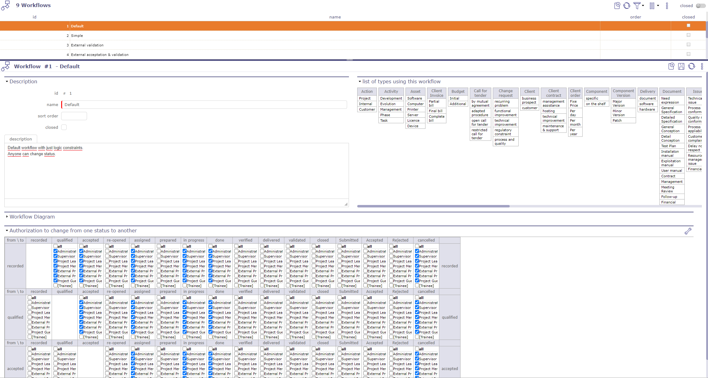
Écran du workflow¶
Sélectionner un statut
Cliquez sur  pour afficher la liste des statuts.
pour afficher la liste des statuts.
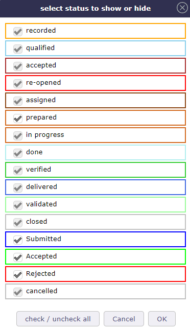
Sélectionner ou masquer un statut¶
Choisissez les statuts à conserver ou à masquer en cochant les cases
Section Liste des types utilisant ce workflow
Liste de tous les éléments et objets liés à ce workflow
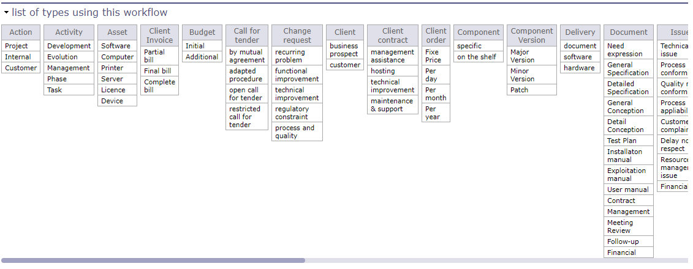
Liste des types utilisant ce workflow¶
Section Diagramme du workflow
Le diagramme du workflow présente une représentation visuelle du workflow affichant toutes les transitions possibles (indépendamment des droits de profil).
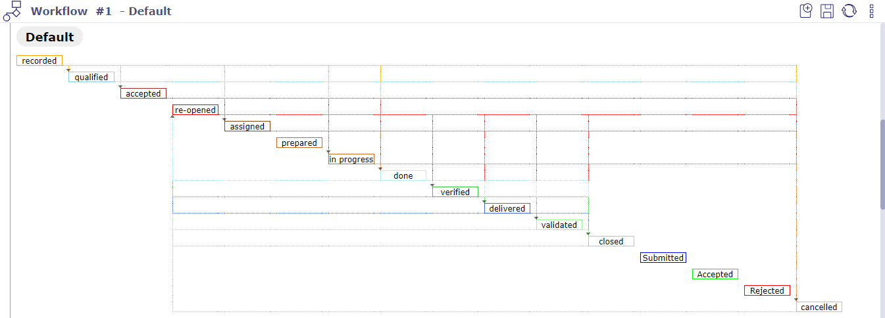
Diagramme du workflow¶
Section Habilitation pour changer d’un statut à un autre
Le tableau d’habilitation aide à définir qui peut passer d’un statut à un autre.
Chaque ligne correspond au statut depuis lequel vous souhaitez pouvoir vous déplacer.
Chaque colonne correspond au statut vers lequel vous souhaitez pouvoir aller.
Il n’est pas possible de passer d’un statut à lui-même (ces cellules sont vides).
Cochez simplement le profil (ou « tous ») autorisé à passer d’un statut à un autre.
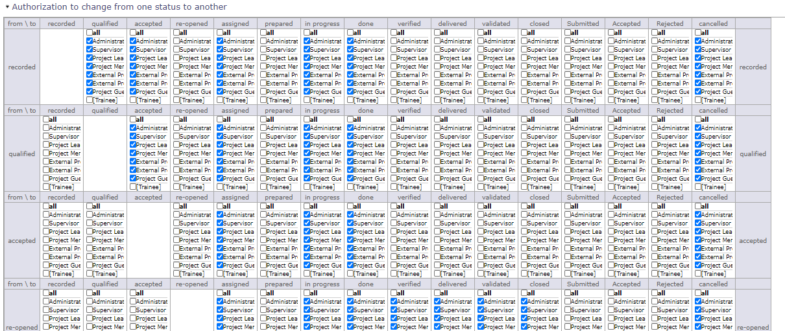
Tableau d’habilitation¶
Assurez-vous qu’il est toujours possible de transférer un élément d’un statut à un autre, car il est possible de rester bloqué sur un statut.
Vérifiez les liens pour qu’il existe toujours une issue.
Modèles d’e-mail¶
L’utilisateur peut formater les mails envoyés automatiquement lors d’événements.
Lors de l’utilisation d’un modèle, le formatage standard de l’e-mail est remplacé par celui sélectionné.
Définissez simplement vos modèles et sélectionnez-les dans « Mail sur événements »
Voir aussi
Note
Champ élément mis à jour et type
S’il n’est pas défini, le modèle est valable pour tous les types de l’élément
Si l’élément est défini, seuls ces éléments pourront sélectionner le modèle
Si l’élément et le type sont définis, seuls les éléments du type correspondant pourront sélectionner le modèle de mail
Balises spécifiques sur le modèle d’e-mail
Dans le modèle, l’utilisateur peut utiliser n’importe quelle propriété du sujet et l’afficher dans le mail grâce à des balises spécifiques.
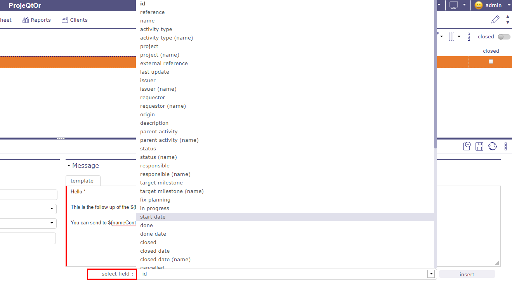
Balises spécifiques¶
Il vous suffit d’utiliser la balise ${projectName} pour que le nom du projet apparaisse et ${idproject} pour afficher le numéro d’identification de celui-ci.
Astuce
Pour les propriétés référençant un élément externe, comme idXxxxx, utilisez ${nameXxxxx}
D’autres balises sont disponibles comme paramètres pour les titres d’e-mails
Voir aussi
Astuce
Certaines balises spécifiques peuvent également être utilisées
${item} : classe de l’élément
${dbName} : nom d’affichage de l’instance actuelle
${responsible} : synonyme de ${nameResource}
${sender} : nom de l’utilisateur envoyant l’e-mail
${project} : synonyme de ${nameProject}
${url} : URL pour obtenir le lien direct vers l’élément
${goto} : affiche la classe et l’Id de l’élément, cliquable pour avoir un lien direct vers l’élément
Fichiers joints
${allAttachments} : permet d’ajouter à votre modèle tous les fichiers joints de l’élément
${lastAttachment} : permet d’ajouter le dernier fichier joint à l’élément
Important
Lors de l’envoi de tous les fichiers, le logiciel les récupère un par un dans l’ordre d’insertion, du fichier joint le plus récent au plus ancien.
Si la taille maximale autorisée ne permet pas d’envoyer tous les fichiers, le logiciel s’arrêtera jusqu’à atteindre la taille maximale.
Si le dernier fichier joint enregistré dans le logiciel dépasse à lui seul la taille maximale autorisée, aucun fichier n’est envoyé.
Avertissement
Ces balises sont disponibles sauf dans le titre du mail car elles affichent un tableau
${HISTORY} : affiche la dernière modification d’un objet.
${HISTORYFULL} : affiche toutes les modifications
${LINK} : liste les éléments liés à l’élément
${NOTE} : liste les notes de l’élément sous forme de tableau
${NOTESTD} : liste les notes au format par défaut
Le sélecteur de balises
Un sélecteur de balises est disponible sous les champs de texte.
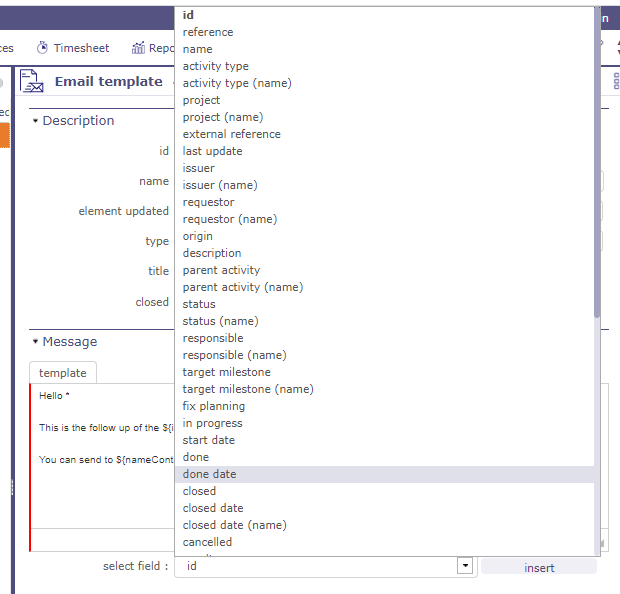
Insérer des balises spécifiques¶
Choisissez la balise que vous souhaitez insérer.
Cliquez sur insérer
La balise apparaît dans le corps du texte
Délais pour les tickets¶
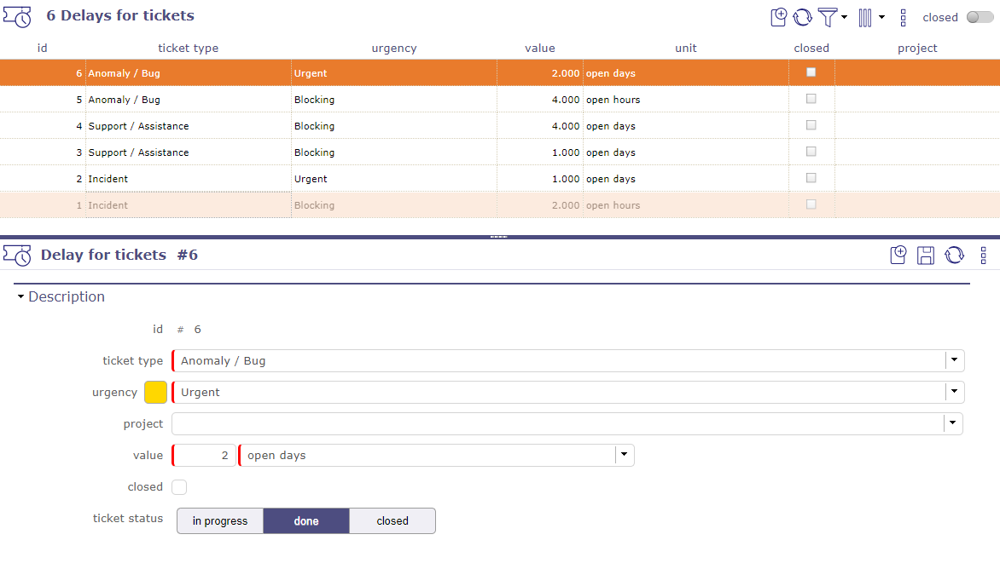
Écran des délais pour les tickets¶
Il est possible de définir un délai par défaut pour les tickets, pour chaque type de ticket, chaque urgence de ticket et pour chaque statut.
Note
À la création, la date d’échéance sera automatiquement calculée comme date de création + délai.
Astuce
Vous déterminez quel sera le statut du ticket pour le délai que vous créez.
Pour le même ticket, vous pouvez avoir 2 jours pour le prendre en charge, 1 jour pour le traiter et 1 jour pour le clôturer.
Indicateurs unitaires¶
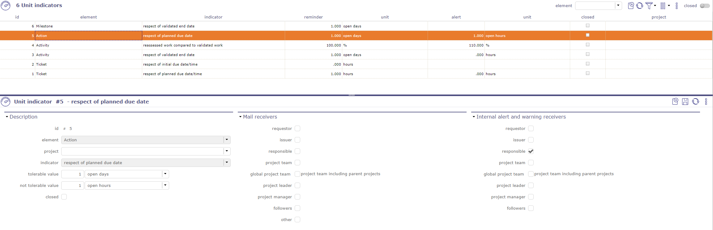
Indicateurs¶
Il est possible de définir des indicateurs sur la plupart des éléments. Vous pouvez définir les indicateurs sur :
actions
activités
factures client
échanges de factures client
commandes client
devis client
dépenses individuelles
problèmes
réunions
jalons
commandes fournisseur
projets
dépenses de projet
factures fournisseur
offres fournisseur
questions
exigences
risques
délais de paiement aux fournisseurs
sessions de test
et enfin les tickets
Selon le type d’éléments, le type d’indicateurs pouvant être sélectionné dans la liste diffère.
Certains indicateurs sont basés sur le délai (date d’échéance), d’autres sur le travail, d’autres encore sur le coût.
Pour chaque indicateur, une valeur d’avertissement et une valeur d’alerte peuvent être définies en jours ou en heures (ouvrés ou non).
Affichage des indicateurs
Sur l’écran Aujourd’hui, dans les listes de résumé des éléments, un code couleur est appliqué à la ligne si l’élément est soumis à un indicateur et est concerné par les valeurs d’alerte saisies.
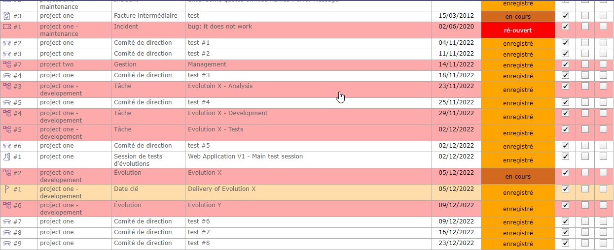
Code couleur appliqué aux lignes dont les éléments sont soumis à des indicateurs¶
Sur l’écran d’un élément soumis aux indicateurs et dont les valeurs entrent dans la zone d’alerte, une icône est affichée devant la description de l’élément.
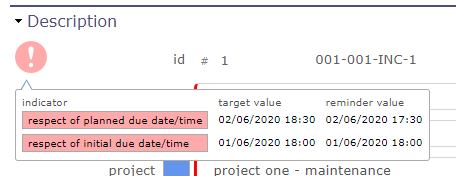
affichage de l’indicateur et des valeurs appliquées à l’élément¶
Lorsque vous survolez l’icône, l’indicateur activé sur cet élément est affiché avec les valeurs de rappel et d’alerte.
Destinataires des mails
Liste des adresses des mails.
La liste n’est pas nominative, mais définie comme des rôles sur l’élément.
Chaque destinataire ne recevra le mail qu’une seule fois, même si une personne a plusieurs rôles « cochés » sur l’élément.
Voir aussi
Liste des destinataires pour le détail des destinataires.
Destinataires des alertes et avertissements internes
Liste des adresses de l’alerte interne.
La liste n’est pas nominative, mais définie comme des rôles sur l’élément.
Voir aussi
Liste des destinataires pour le détail des destinataires.
Notes prédéfinies¶
La note prédéfinie offre la possibilité de définir des textes prédéfinis pour les notes.
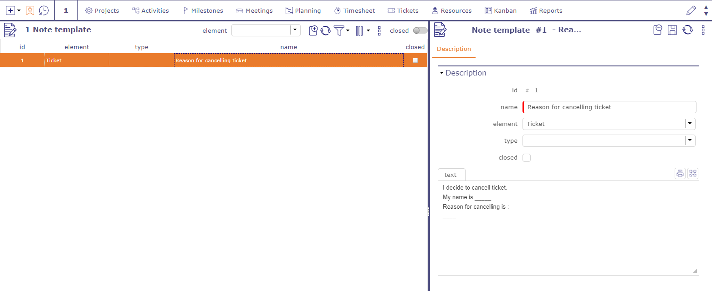
Notes prédéfinies¶
Lorsque des notes prédéfinies sont définies pour un élément et/ou un type, une liste apparaîtra lors de la création d’une note.
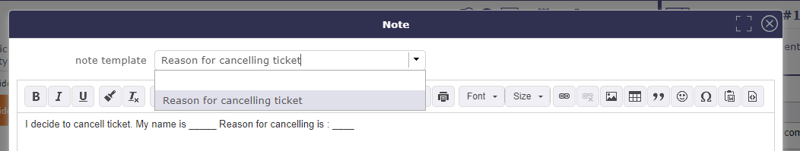
Notes prédéfinies pour les tickets¶
La sélection d’un élément dans la liste remplira automatiquement le champ texte de la note.
Listes de contrôle¶
Il est possible de définir des formulaires de liste de contrôle pour chaque élément ou chaque type d’élément.
Lorsqu’un formulaire de liste de contrôle existe pour un élément donné, la liste de contrôle n’est disponible que pour cet élément.
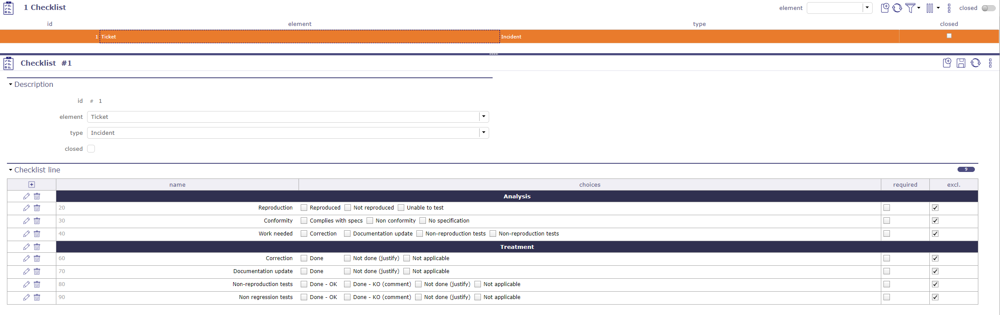
Écran de liste de contrôle¶
Une liste de contrôle est composée de lignes de liste de contrôle.
Chaque ligne a un nom, un ordre et jusqu’à 5 choix de case à cocher.
Cliquez sur
 pour créer une nouvelle ligne de liste de contrôle.
pour créer une nouvelle ligne de liste de contrôle.Cliquez sur
 pour mettre à jour une ligne de liste de contrôle existante.
pour mettre à jour une ligne de liste de contrôle existante.Cliquez sur
 pour supprimer la ligne de liste de contrôle correspondante.
pour supprimer la ligne de liste de contrôle correspondante.
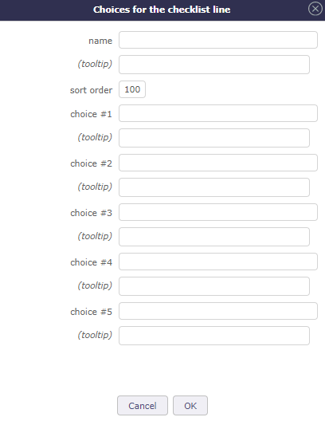
Choix pour les lignes de liste de contrôle¶
Une ligne sans choix de case sera affichée comme un titre de section.
Le nom et les choix ont 2 champs :
Libellé affiché.
Texte d’aide qui sera affiché en info-bulle.
Les cases peuvent être exclusives (en sélectionner une désélectionne les autres) ou non (la multi-sélection est alors possible).
Définitions des KPI¶
Un indicateur de performance ou indicateur clé de performance (KPI) est un type de mesure de la performance.
Il est possible de définir des KPI sur les éléments entrants et livrables.
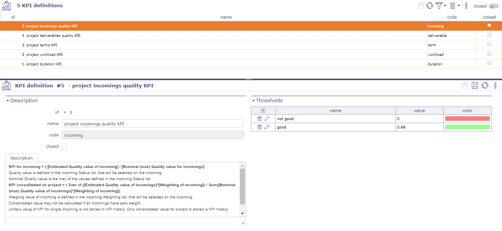
Écran de définition des KPI¶
Avertissement
La description intègre la formule utilisée pour calculer le KPI.
Section Seuils
Il est possible d’attribuer des lignes de seuils aux KPI.
Cliquez sur
pour créer une nouvelle ligne de JobList.Cliquez sur
pour mettre à jour une ligne de JobList existante.Cliquez sur
pour supprimer la ligne de JobList correspondante.
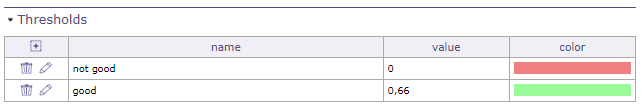
Note
Gardez à l’esprit que le KPI est un indicateur de performance au niveau du projet (contrairement à l’indicateur qui est calculé au niveau de l’élément).
Pour afficher l’indicateur, utilisez le rapport KPI. Voir : Rapports
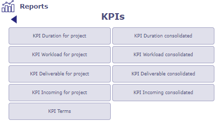
Liste des rapports KPI¶
JobList¶
La JobList peut être utilisée pour chaque élément ou type d’élément
Elle est généralement utilisée pour détailler une activité ou un ticket.
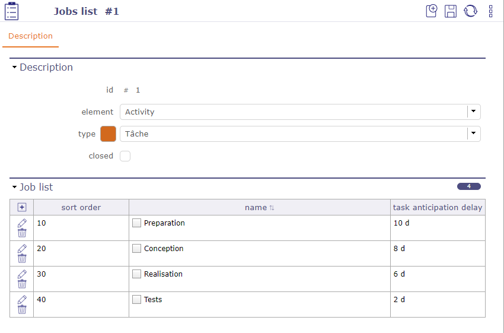
Création d’une liste de tâches¶
Elle agit également comme indicateur pour surveiller le respect des valeurs de dates grâce au délai des tâches.
Section lignes de JobList
Une JobList est composée de lignes de JobList.
Cliquez sur
pour créer une nouvelle ligne de JobList.Cliquez sur
pour mettre à jour une ligne de JobList existante.Cliquez sur
pour supprimer la ligne de JobList correspondante.
Délai d’anticipation de la tâche.
Ce délai est fixé pour chaque étape créée dans la joblist. Il fonctionne avec les dates planifiées. Il n’est pas obligatoire
Ces délais sont calculés en jours calendaires à partir du dernier jour de l’élément planifié.
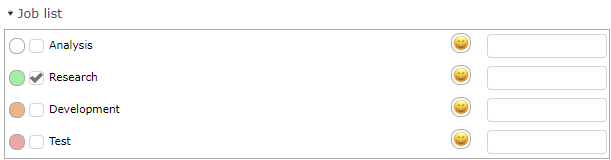
Code couleur délai d’anticipation de la Joblist¶
Un code couleur vous permet d’anticiper ces dates
Blanc : Sans délai d’anticipation
Vert : Cochez la case pour indiquer que cette étape est terminée. Le point devient vert.
Orange : Vous entrez dans la période d’anticipation
Rouge : vous avez dépassé ce délai
Lorsque la liste est créée et affichée sur l’écran de l’élément, vous pouvez modifier les dates de fin planifiées en dates de fin validées.
Cliquez sur pour modifier le responsable et la date de fin validée.
Boîte mail d’entrée pour l’import¶
Avec les boîtes mail d’import automatique, vous transférez un fichier à importer par e-mail.
Configurez une boîte mail d’import qui n’insérera pas un élément mais lira le fichier joint (CSV ou XLSX)
l’importera comme s’il avait été placé dans le répertoire d’import automatique.
Note
Le fichier joint sera au format « Class_XXXXXXXX.xlsx » ou « Class_XXXXXXXX.csv ».
Class est la classe des éléments à importer.
XXXXXXXX est un horodatage utilisé pour distinguer les fichiers (généralement YYYYMMDD).
Avertissement
Contrairement à l’import automatique basé sur un répertoire, l’horodatage ne sera pas utilisé pour ordonner les fichiers à importer ; l’ordre de réception des e-mails déterminera cet ordre.
L’e-mail d’envoi doit être connu et correspondre à un utilisateur ayant le droit de créer des éléments de la classe à importer.
L’import doit être effectué avec les droits de cet utilisateur.
Cela signifie qu’un chef de projet qui importe des activités ne pourra créer des activités que sur ses propres projets.
Les résultats de l’import seront renvoyés par e-mail à l’adresse de l’expéditeur. Le format sera identique au format d’import manuel.
Notifications¶
Vous devez activer le module de notifications pour afficher les écrans correspondants
ProjeQtOr propose 2 systèmes pour générer des alertes ou des rappels : définition de notifications et notifications manuelles depuis le menu outils
La définition de notifications dans le menu contrôle et automatisation vous permet de créer des notifications sur des événements
Notifications d’événements¶
L’application est capable d’envoyer automatiquement des e-mails internes ou des notifications lorsqu’un élément est mis à jour.
Les événements sont définis sur un élément et/ou un type d’élément.
Si le champ type n’est pas défini, l’événement est valable pour chaque type de l’élément.
Pour les e-mails
Le message e-mail est formaté pour afficher des informations sur l’élément.
La sélection d’un modèle utilisera le formatage du modèle au lieu du formatage standard par défaut.
Les titres des e-mails sont définis dans les Paramètres globaux.
Pour les notifications
Vous pouvez utiliser les notifications générées par votre navigateur ou les notifications internes de ProjeQtOr.
Lors de l’ouverture de l’application dans votre navigateur, un message d’autorisation pour l’affichage des notifications ProjeQtOr vous sera proposé.
Après acceptation, les notifications de votre navigateur remplaceront les notifications internes.
Vous verrez les notifications depuis votre bureau même si vous n’êtes pas directement sur l’application.
Avertissement
Vous devez autoriser les notifications de votre navigateur dans les paramètres de votre système d’exploitation.
L’application ProjeQtOr doit fonctionner en arrière-plan pour continuer à recevoir des notifications.
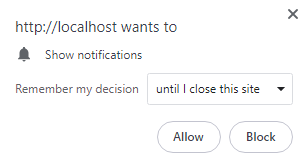
message du navigateur pour autoriser les notifications¶
Section description
Dans la section description, vous détaillerez quels seront les leviers pour déclencher l’envoi d’un e-mail.
Le statut est l’un de ces leviers. Positionner des éléments dans le statut choisi générera un e-mail.
Ou choisissez tout autre événement dans la liste déroulante.
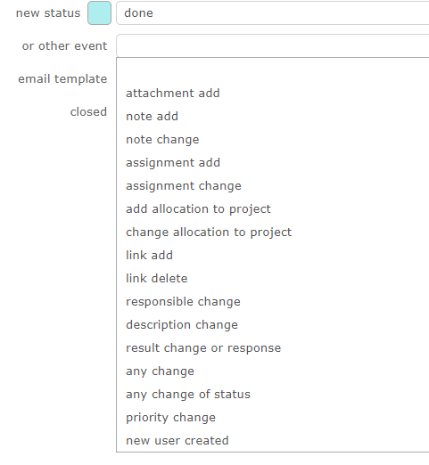
Liste des événements¶
Section destinataires
Liste des adresses des mails.
La liste n’est pas nominative, mais définie comme des rôles sur l’élément.
Chaque destinataire ne recevra le mail qu’une seule fois, même si une personne a plusieurs rôles « cochés » sur l’élément.
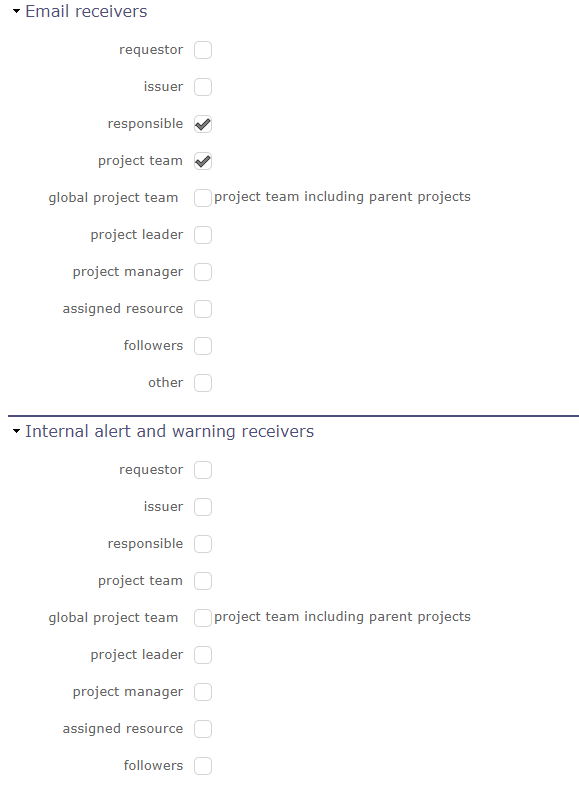
Section destinataires¶
Voir aussi
Liste des destinataires pour le détail des destinataires.
Notifications¶
Vous pouvez définir manuellement des notifications dans cet écran.
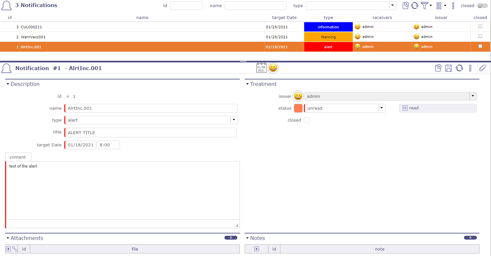
Notifications¶
Vous recevez des notifications dès que vous vous authentifiez sur l’écran de connexion
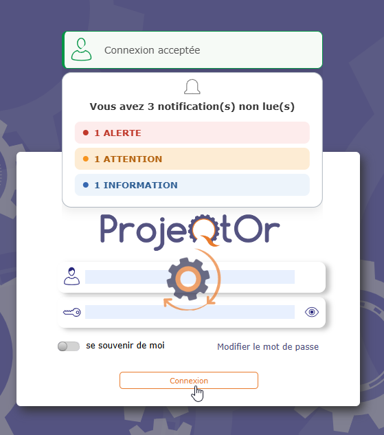
Lorsque vous êtes connecté, vous avez un rappel en haut de l’écran.
Vous avez le nombre de notifications non lues
Survolez-le pour que la liste des notifications apparaisse
Une légère ligne colorée devant le nom indique le type de notification
Rouge = alerte
Bleu = information
Jaune = avertissement
vous pouvez créer autant de types que vous le souhaitez et personnaliser les couleurs à votre guise.
Cliquez sur le titre de la notification pour afficher son écran de détail.
Cliquez sur  pour faire disparaître la notification et la passer au statut « lu ».
pour faire disparaître la notification et la passer au statut « lu ».
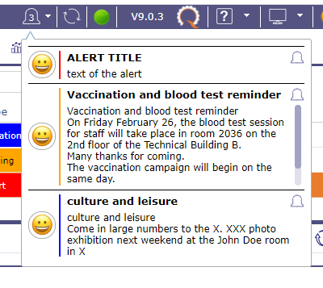
Liste des notifications sur la barre d’information¶
Vous pouvez également afficher la notification dans la partie sous le menu.

Notifications¶
Voir aussi
Cliquez sur une notification non lue pour découvrir les détails.
La première icône indique le type de notification.
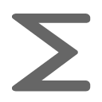
somme - Enregistre tous les types
La deuxième icône indique comment la notification a été créée
Notification manuelle
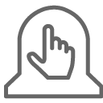
La troisième icône indique si la notification a une définition.
{kind=link}
{kind=link}
{kind=link}
{kind=link}
{kind=link}
{kind=link}
{kind=link}
Voir aussi
Cliquez sur la quatrième icône pour afficher le détail de la notification
Définition de notification¶
Ce système vous permet de générer des notifications ou selon des règles très « puissantes » (définies comme des clauses « where »).
S’il est généré par le système de notification, il est lié à un élément du système (Action, Facture, …).
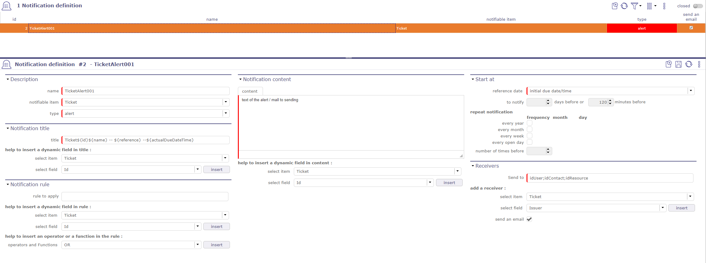
Écran du système de notifications¶
Création
La définition de la génération de notifications est basée sur les éléments suivants :
Le titre qui peut contenir les valeurs de champ de l’élément notifiable ou de ses sous-éléments
L’élément du système qui détermine la notification, appelé « Élément notifiable » (notifiable)
Le type de notification (Alerte, Avertissement, Information)
La règle de notification notifiant les éléments liés à la génération d’une notification
Le contenu peut également contenir les valeurs de champ de l’élément notifiable ou de ses sous-éléments.
La date (appelée date de référence) à laquelle la notification doit être générée. Il s’agit de l’une des dates de l’élément notifiable qui n’est pas la date de création.
Les destinataires de la notification générée. Champs de l’élément notifiable ou de ses sous-éléments qui font référence aux utilisateurs.
Le choix d’envoyer, ou non, l’envoi d’e-mails en même temps que les notifications.
Titre de la notification
Cette section vous permet de donner un titre à votre notification.
Ce titre sera l’objet du mail programmé si vous cochez la case envoyer un e-mail dans la section destinataires
Vous pouvez ajouter des champs dynamiques avec aide pour insérer un champ dynamique dans le titre
Le titre de la notification peut donc contenir des champs de l’objet « notifiable » et de ses éléments liés via un idXXX.
Où XXX est le nom de l’élément lié.
Sélectionnez un objet et/ou un champ et cliquez sur le bouton Insérer pour que le champ dynamique avec la syntaxe correcte s’insère directement dans le titre, là où se trouve le curseur.
Dans ce cas, la syntaxe doit être : #{le nom du champ} …
Astuce
#{billId} - Facture non payée - Envoyée le #{sendDate} Si la règle (voir ci-dessous) de l’instruction sur la facture de “billId” 2019-12-30-0001 dont la date d’envoi est le 30-12-2019, alors le titre de la notification sera :
2019-12-30-0001 - Facture non payée - Soumise le 30-12-2019
Règle à appliquer
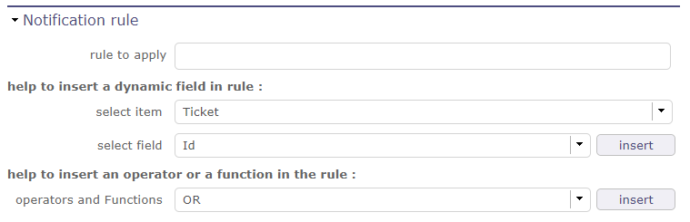
Règles de notifications¶
Cette règle détermine quelle instance de l’élément générera une notification.
La syntaxe est celle que nous utilisons pour une clause WHERE dans une instruction SQL.
Astuce
Planifier une notification pour toutes les factures où le montant payé = montant total ET le nom du projet “ACME”
#{paymentAmount} < #{fullAmount} AND #{idProject.name} = “ACME” AND isnull (#{paymentDate)
Note
La règle à appliquer n’est pas obligatoire. Si la règle est vide, seule la date de référence est utilisée pour déterminer si une notification est générée ou non.
En plus de choisir un champ dynamique, vous pouvez choisir d’utiliser un opérateur ou une fonction avec les éléments suivants :
Contenu de la notification
Cette section est obligatoire.
Vous pouvez également ajouter des champs dynamiques avec aide pour insérer un champ dynamique dans le contenu de la même façon que dans la section description.
Section Démarrer à
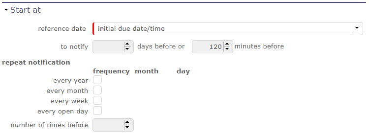
Section de démarrage¶
cette section vous permet de programmer la fréquence d’affichage de la notification
La date de référence
Date à laquelle la notification sera générée (moins le nombre de jours ou de minutes programmés avant)
Notifier avant : Il s’agit d’un nombre de jours avant la date de notification pour laquelle la notification doit être générée
Ce champ est obligatoire
Astuce
Exemple : « date de livraison prévue » est sélectionnée.
Pour tous les livrables qui ne suivent pas la règle précédente, une notification sera générée si la date de livraison n’est pas respectée.
Chaque année
Si l’année est cochée, le générateur produit une notification chaque année au mois et au jour de la date de référence
Si l’année est cochée et que le mois et le jour sont renseignés, il s’agit d’un anniversaire. La date de référence ne sera pas utilisée.
Chaque mois / Semaine / Jour ouvré
Si sélectionné, des notifications réactives seront générées mensuellement / hebdomadairement ou chaque jour ouvré
Destinataires
Dans ce champ, saisissez les destinataires qui recevront la notification générée. La liste des destinataires doit être séparée par un point-virgule. (Ex : idUser ; idContact)
Vous pouvez également choisir directement certains participants de vos éléments dans les listes proposées. Choisissez l’élément proposé dans la liste d’objets, la liste suivante s’adapte en fonction de ce dernier, sélectionnez le bon contact. Les informations de celui-ci seront récupérées sur le bon projet et élément lors de la génération de la notification.
Si E-mail envoyé est coché, un e-mail sera généré même si la notification pour chaque type de personne a été définie.
Voir aussi
Paramètres globaux Gestion du service automatisé (CRON)
Donne en secondes, l’intervalle de temps entre deux générations de notification (et le système Cron est actif)
et entre deux l’actualisation des notifications sur l’IHM.
Note
Les autorisations
Les droits d’accès pour le menu “notification” ont été donnés aux profils “standard” de ProjeQtOr (idProfile = 1 à 7) avec les droits CRUD lecteur uniquement
Les droits d’accès pour le menu “définition de notification” ont été accordés pour le profil administrateur (idProfile = 1) avec les droits CRUD modificateurs
Notification et l’IHM¶
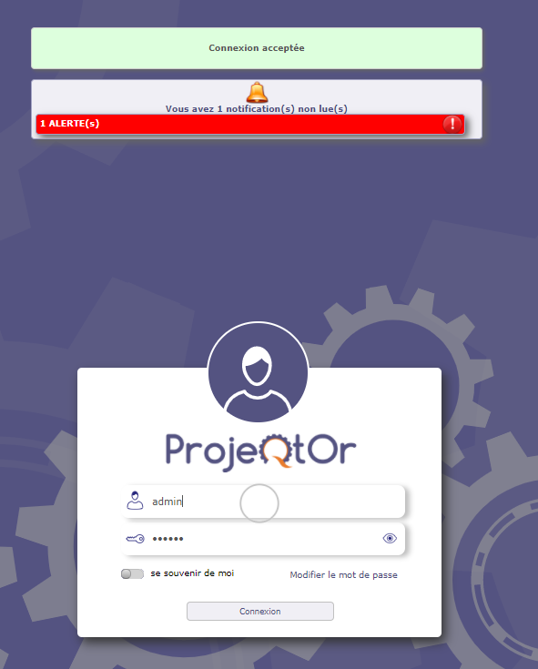
Notification sur l’écran de connexion¶
Après la connexion, un message généré après « Connexion acceptée » vous indique que vous avez des notifications non lues :
Affichage des notifications non lues
Cela se fait à 2 niveaux sur l’écran principal :
Une icône de notification apparaît dès qu’une notification n’est pas destinée à l’utilisateur.
Cliquer sur l’icône donne un accès direct à l’écran des notifications.
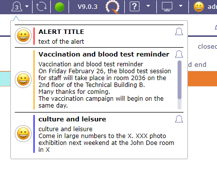
Notifications¶
Et dans le menu secondaire.
Notifications¶
Un arbre dont le titre indique le nombre de notifications non lues destinées à l’utilisateur.
Cet arbre possède les niveaux suivants :
Niveau 1 : Les types de notifications
Niveau 2 : Le déclencheur des notifications
Niveau 3 : La définition de notification pour les notifications produit
Niveau 4 : L’id de l’élément qui a généré la notification. Permet un accès direct à l’élément.
L’icône  vous permet d’actualiser les notifications sans attendre la mise à jour planifiée.
vous permet d’actualiser les notifications sans attendre la mise à jour planifiée.
L’icône donne un accès direct à l’écran des notifications.
Les chiffres indiquent le nombre de notifications non lues
Liste des destinataires¶
Les destinataires peuvent recevoir des e-mails et des alertes.
Une description des destinataires ci-dessous.
Demandeur
Le contact défini comme demandeur sur l’élément actuel ; apparaît parfois comme « contact » (sur un devis et une commande, par exemple) et parfois sans signification (par exemple pour un jalon).
Émetteur
L’utilisateur défini comme Émetteur.
Responsable
La ressource définie comme responsable.
Équipe projet
Toutes les ressources allouées au projet.
Équipe projet globale
Toutes les ressources allouées au projet et celles des projets parents.
Chef de projet
La/les ressource(s) allouée(s) au projet avec un profil « Chef de projet ».
Directeur de projet
La ressource définie comme manager d’un projet.
Ressource affectée
Toutes les ressources affectées.
Autre
Fournit un champ supplémentaire pour saisir manuellement des adresses e-mail.
Si « autre » est coché, une zone de saisie s’affiche pour saisir une liste d’adresses mail statiques.
Plusieurs adresses peuvent être saisies, séparées par un point-virgule.